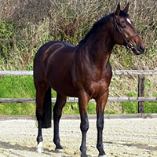
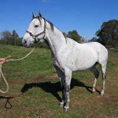
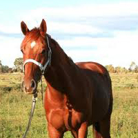
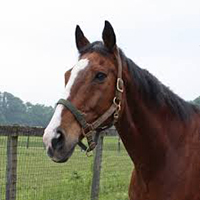
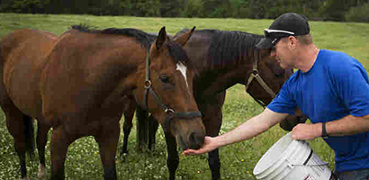

“Education, Advocacy, Sanctuary”
TRF strives to prevent future cruelty towards horses by educating the community about responsible equine stewardship. TRF Provides rescue, rehabilitation and permanent placement to abused, neglected or at-risk equines. Lifelong sanctuary is provided to those equines unable to find a permanent home. Education, advocacy and equine support is offered throughout the community.
Adopt
   Loved and trained by our family and ready to be a part of yours.
SEE MORE
Support
Sponsor or foster a horse until we find them a permanent home.
LEARN MORE